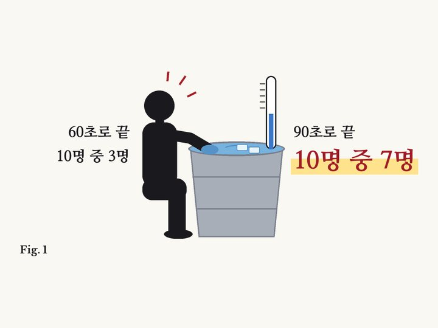

연구 해설 · 제6호
30초 더 아픈 쪽을 10명 중 7명이 골랐다
When more pain is preferred to less
Kahneman, Fredrickson, Schreiber & Redelmeier · Psychological Science, 1993
Kahneman, Fredrickson, Schreiber & Redelmeier · Psychological Science, 1993

01결과
사람들이 한 손을 아주 차가운 물에 60초 동안 담갔어요. 다른 손은 90초 동안 담갔어요. 마지막 30초 동안은 물이 조금 덜 차가워졌어요. 어느 쪽을 다시 하겠냐고 묻자 10명 중 7명쯤이 더 긴 쪽을 골랐어요.
02왜 그럴까
우리는 아팠던 시간을 1초 1초 다 기억하지 않아요. 기억에는 가장 힘든 순간과 마지막 순간이 남아요. 두 번 다 가장 힘든 순간은 똑같았어요. 긴 쪽은 끝이 덜 힘들어서 돌아보면 더 나았어요.
03찬물만이 아니다
의사들이 대장내시경에서 같은 걸 시험했어요. 일부 환자는 검사 끝에 기구를 3분 더 그대로 뒀어요. 아프진 않고 불편한 정도였어요. 이 환자들은 검사를 덜 괴롭게 기억했어요. 다음 검사에도 더 많이 왔어요.
04나와 무슨 상관일까
여행, 데이트, 힘든 하루도 마지막이 기억에 남아요. 그래서 '좋게 마무리하자'는 말이 있어요.
05읽을 때 주의할 점
첫 연구는 찬물로 한 작은 실험이었어요. 뒤의 연구들에선 긴 호텔 숙박처럼 모든 경험에 들어맞지는 않았어요.
원 논문
- Kahneman, Fredrickson, Schreiber & Redelmeier (1993), Psychological Science, doi:10.1111/j.1467-9280.1993.tb00589.x
- doi.org/10.1111/j.1467-9280.1993.tb00589.x
함께 확인한 자료
- https://en.wikipedia.org/wiki/Peak%E2%80%93end_rule
- https://mindhacks.com/2013/05/28/why-you-might-prefer-more-pain/
- https://www.issoh.co.jp/md/column/8736
HOLT NEWS가 논문과 공개 자료를 직접 읽고 쉬운 말로 풀어 썼습니다. 그림은 HOLT NEWS가 그렸습니다.